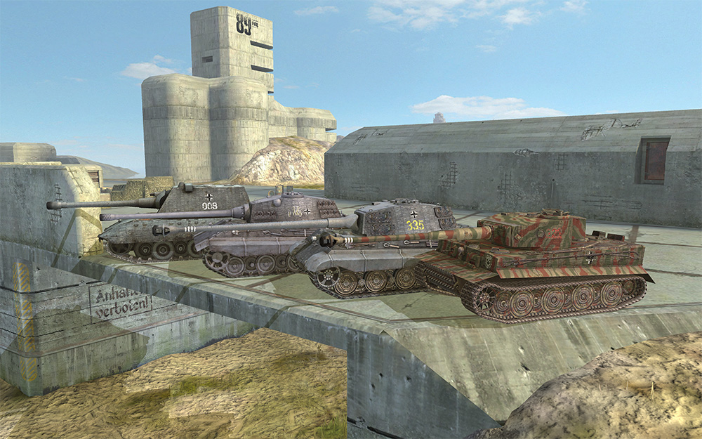

KBM SkinMods "TrueGermany"
Creator
Mod Information
- ID: 3d.tank_skin.kbm_truegermany_pc
- Description:These SkinMods include tactical tank markings and insignias based on historical WW2 markings
with a personal note of the author. You might also find additional markings, wear and Zimmerit
on the tanks as a further customisation.
TankSkins are continuously added. This modpack is intented to finally include all tier 7-10
tanks of the german tech tree.
